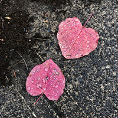

(503) 442-6443 (mobile)
charles.hartman@protonmail.ch



Responsibilities include all initial planning and execution for this start-up as well as all areas of ongoing business management and day-to-day operations. Implement marketing strategies including trade shows, print advertising, website and social media as well as one-on-one client development. Plan and execute trade show exhibits in New York City, Miami, Los Angeles, Chicago, Seattle, Houston and San Francisco. Negotiate price and terms for all purchases for inventory and consignment agreements. Cultivate clients and guide sales from inception to closing. Work with museums, corporate collections and individual clients to acquire specific pieces and build noted collections. Create and maintain relationships with other dealers to facilitate opportunities for joint acquisitions and collaborative sales. Mount changing exhibitions and do all associated marketing and publicity. Grow sales revenues while controlling expenses and maintaining profit margins, quality of service and inventory. Implement database system for managing and tracking clients, inventory, invoicing and payables. Direct initial as well as continued front and back end development of extensive gallery website. Create and distribute email campaigns and other forms of direct marketing.